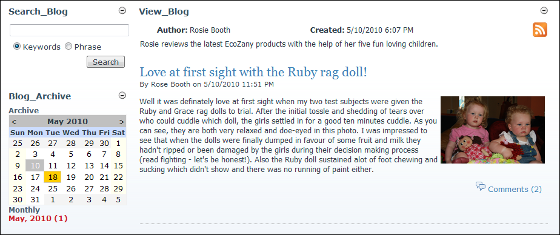

Creating a Personal Blog Page
How to display a single blog on a new page or on a page other than the page where all blogs are displayed. This enables you to create a personal blog page for a blogger and sets the View_Blog, Search_Blog and Blog_Archive modules display information exclusively for this blog.
- Optional. Add a new page for the personal blog page (E.g. "Rose Booth's Blog") - OR - Go to the page where you want to place the personal blog. See "Adding a New Page"
- Add an existing copy of the View_Blog module to the page. See "Adding an Existing Module (ControlBar)" - OR - See "Adding an Existing Module (RibbonBar)"
- Using the View_Blog module, set the required page at Personal Blog Page. See "Configuring Advanced Settings for the Blog Module"
- Optional. You may like to add Search_Blog and Blog Archive modules to this page. These are the only modules that function exclusively as a personal blog. You can add other blog module parts (E.g. Blog_Comments) to the page however they will display information from other blogs.

A Personal Blog Page Including the Search_Blog and Blog Archive Modules